Esta Norma estabelece os requisitos e as medidas de prevenção para o trabalho em altura, envolvendo o planejamento, a organização e a execução, de forma a garantir a segurança e a saúde dos trabalhadores envolvidos direta ou indiretamente com esta atividade. Entre tantos acidentes que ocorrem na vida, o que envolve altura é sem dúvida um dos que mais deixa sequelas. Muitas vezes, precisamos fazer trabalhos em altura e para isso utilizamos escadas ou até mesmo andaimes.
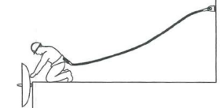 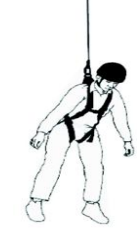
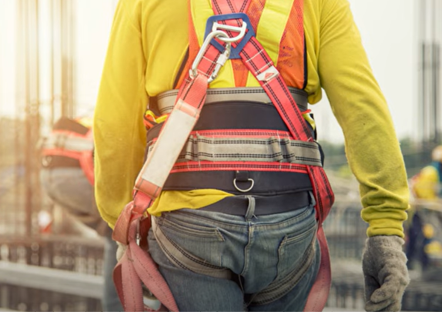
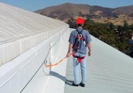 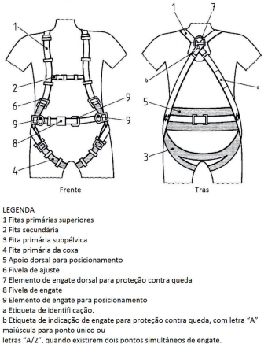
Segundo a NR-35, os trabalhos em altura só poderão ser executados por pessoas devidamente treinadas e orientadas pelas chefias responsáveis pelo serviço, além do uso de capacete com jugular e roupas adequadas ao trabalho, não sendo permitido o uso de sandálias ou chinelo. Também não é permitido brincadeiras ou jogar ferramentas do local elevado.
É necessária a utilização do cinto porta-ferramenta ou bolsa própria para guardar e transportar ferramentas manuais. Este local deverá ser sinalizado através de placas indicativas e ou cones. Deverá ainda ser feito um isolamento para prevenir acidentes com transeuntes ou pessoas que estejam trabalhando embaixo.
Todo trabalho em altura deverá ser previamente autorizado pela área de Prevenção de Acidentes (PAC), através da emissão de Autorização para Trabalho em Altura.
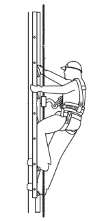
Percebe-se a importancia de se conhecer os requisitos mínimos e as medidas de proteção para o trabalho em altura, a importancia do planejamento, da organização e da execução, de forma a garantir a segurança e a saúde dos trabalhadores envolvidos direta ou indiretamente com esta atividade.
O MTE desenvolveu um Manual de auxílio na interpretação e aplicação da NR35, onde podemos aprofundar nossos conhecimentos sobre segurança nos trabalhos em altura.
Não é difícil entender a importância para o instalador fotovoltaico em fazer a capacitação e treinamento para conhecer e aplicar a NR35, já que o mesmo trabalha a maior parte do tempo sobre os telhados.
Busque se capacitar em NR35, antes de começar a trabalhar, pois sua vida é seu bem mais importante.
para a NR35, considera-se trabalhador capacitado para trabalho em altura aquele que foi submetido e aprovado no processo de capacitação, envolvendo treinamento, teórico e prático, inicial, periódico e eventual, observado o disposto na NR-01, onde o treinamento inicial, com carga horária mínima de 8 (oito) horas, deve ser realizado antes de o trabalhador iniciar a atividade. Já o treinamento periódico deve ser realizado a cada dois anos, com carga horária mínima de oito horas, conforme conteúdo programático definido pelo empregador.
Os treinamentos devem ser ministrados por instrutores com comprovada proficiência no assunto, sob a responsabilidade de profissional qualificado ou legalmente habilitado em segurança no trabalho.
É possível baixar o Manual de salvamento do Corpo de Bambeiros de Mato Grosso, onde você pode conhecer muitos tipos de amarrações de segurança.
O Nó em oito duplo pode ser feito sem alça (para fins decorativos) ou com alça (geralmente para uso em escaladas). Quando forma uma alça, o Nó em oito duplo pode ser chamado também de nó de alemão, e tem a função de criar uma alça fixa para sustentar peso ou tração.Devido às características do nó em oito, este nó com alça reduz pouco a resistência da corda, sendo muito útil em ancoragens de cabos no alpinismo. Este nó pode ser feito pelo meio do cabo (seio) ou por suas extremidades (chicotes).
O nó em oito feito pelo seio é usado quando não há limitações para utilizar sua alça, como quando se usa mosquetões de escalada, que possuem gatilho móvel. Trata-se do mesmo nó em oito, porém fazendo-se primeiro um nó em oito simples e transformando-o em nó duplo ao refazer o caminho do oito com o chicote do cabo. Esse método permite fixar a alça da corda em um anel ou elo rígido, que não possui gatilho móvel, ou a um poste, barra ou árvore que não se permitem ser laçadas pela alça feita por outro método.
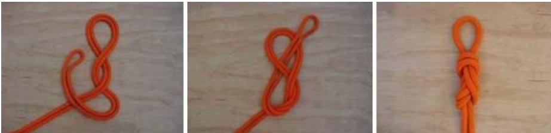
O Nó em nove duplo é feito com o cabo duplicado. Pode ser elaborado tanto pelo seio quanto pelo chicote do cabo ou fita. As opções de feitio atendem às mesmas circunstância descritas para o nó em oito pelo seio ou pelo chicote. Quando forma uma alça é muito utilizado para ancoragem de corda em técnicas verticais.
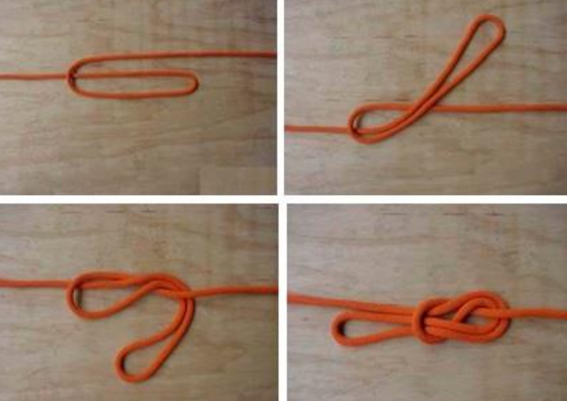
O Nó em 7 alça é feito é elaborado tanto pelo seio quanto pelo chicote do cabo ou fita. As opções de feitio atendem às mesmas circunstância descritas para o nó em oito pelo seio ou pelo chicote. sendo usado para ajuste e escticamento de linha de vida provisória.
Linha de Vida é o nome dado à um sistema de ligação, que pode ser feito com cordas ou fitas, entre o cinto de segurança do trabalhador e um ponto de ancoragem. É considerado um Equipamento de Proteção Coletiva (EPC), uma vez que suporta mais de um colaborador simultaneamente.
A Linha de vida provisória, móvel e horizontal é o tipo de linha de vida mais utilizado em telhados residênciasis pelos instaladores, já que na maioria os telhados residenciais não há previsão ou viabilidade técnica e econômica para a manutenção de linhas de vida permanentes. Ela suporta apenas dois trabalhadores por vez. e deve ser esticada e ancorada com máxima eficiência, por profissionais com capacitação e domínio das técnicas de amarração e ancoragem.
Primaira Ancoragem é feita com o nó 8 duplo.
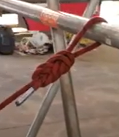
Após a primeira ancoragem com o nó 8 duplo , deve esticar o cabo até o segundo ponto de ancoragem e passar uma alça por ele até um ponto mediano da corda qie permita a tensioná-la com efetividade.
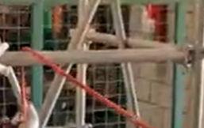
Neste ponto mediano da corda faz-se um nó 7, e passe uma alça da corda, feita com a corda, parte do mesmo nó 7 do lado imediatamente após o nó, para fazer a trava e órender o mosquetão.
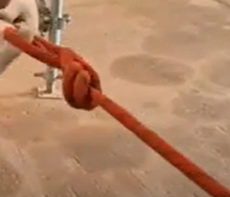
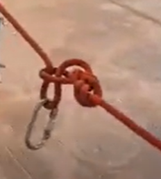
Agora, resgate a alça que passou na segunda ancoragem, faça um nó 08 e prenda no mosquetão. Depois puxe o nó 08 para disponibilizar a corda de ajuste que deverá ser puxada para esticar a linha de vida.
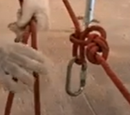
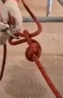
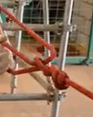
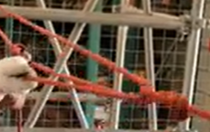
Agora, com a corda esticada é só prender o talabarte ao cinto e à linha de vida, e executar sua instalação tranquilo e seguro.
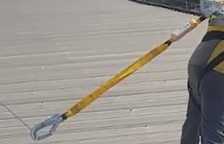